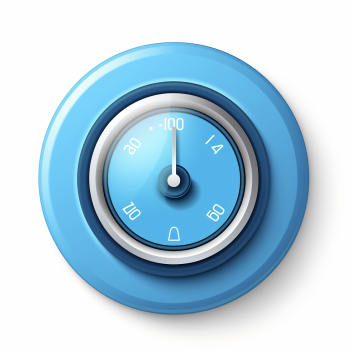

Index
Dashboard
Devices
Settings
Lights
Status: Active
Battery: 85%
Temperature: 25°C
Last Maintenance: Jan 5, 2023
Software Version: 1.2.4
Battery Usage Over Time

Thermostat
Status: Inactive
Battery: 95%
Temperature: 22°C
Last Maintenance: Dec 15, 2022
Software Version: 1.3.0
Temperature Trends Over Time